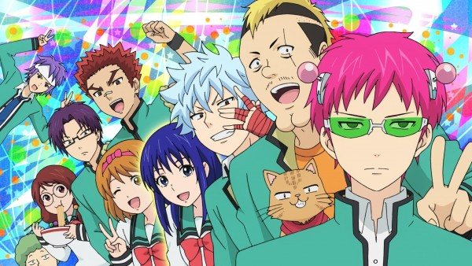
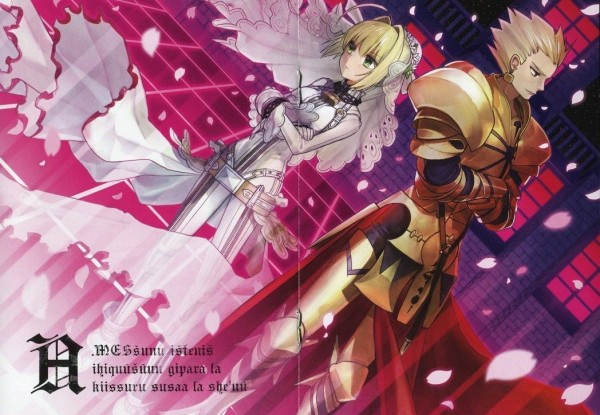
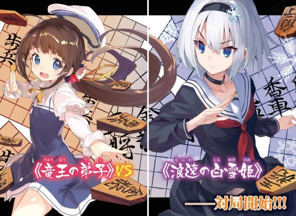
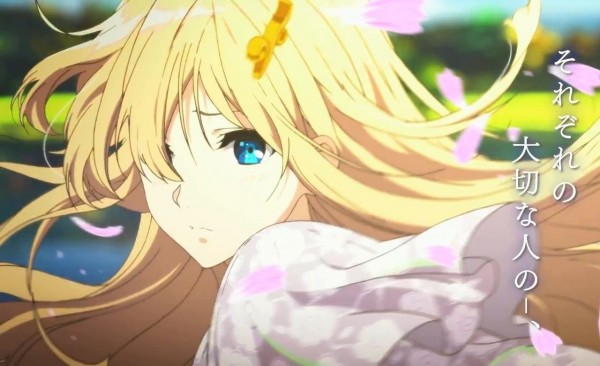
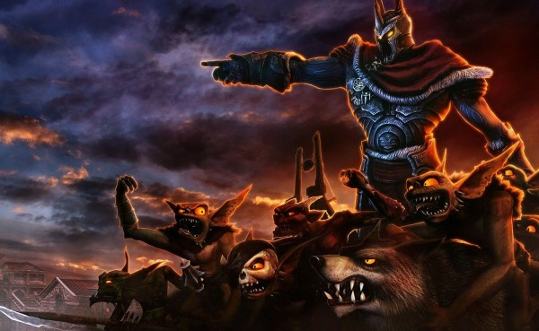
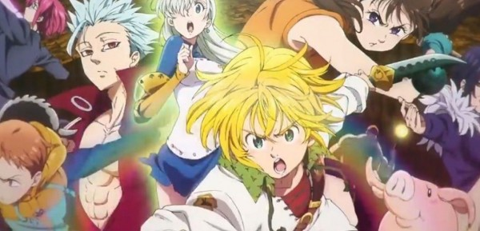
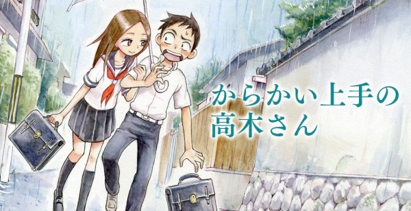

7 Rekomendasi Anime yang Wajib Kamu Tonton di Awal 2018
1. Saiki Kusuo no Ψ-nan 2
Saiki adalah anime season kedua yang tetap menceritakan betapa kacaunya karakter utama namun dalam musim kedua ini beberapa karakter baru dimunculkan diantaranya Atou Hiroshi, Akechi Touma, dan Aiura Mikoto.
Anime yang akan tayang pada 17 Januari mendatang membuat para otaku tidak sabar menantikan rilisnya. Beberapa genre yang super duper lengkap seperti comedy, school, shounen, dan supranatural. Tim produksi optimis bahwa anime berjudul The Disastrous Life of Saiki Kusuo 2 dalam bahasa Inggris akan sukses dipasaran mengingat banyak otaku yang sudah tidak sabar menunggu lirisnya anime tersebut.

2. Fate/Extra Last Encore
Kishinami Hakuno akan bertempur habis-habisan, tidak peduli aapun resikonya termasuk kematiannya. Untuk mendapatan barang misterius yang dikenal dengan cawan suci yang konon bisa mengabulkan keinginan seseorang.
Dunia Kishinami juga termasuk dunia yang sangat aneh, berada didunia virtual yang tidak ia ketahui dan tanpa ingatan masa lalunya. Anime ini akan tayang pada 28 Januari mendatang. Kira-kira bagaimana perjuangan Khisnami melewati hidupnya yang tanpa ingatan, siapkah kamu menemani Kishinami dalam petualanganya didunia virtual?

3. Ryuuou no Oshigoto!
Permainan shogi memang sangat terkenal di Jepang, anime yang berjudul Ryuuou no Oshigoto! menceritakan tentang Kuzuryuu Yaichi yang sangat pandai dan tidak terkalahakan sepanjang sejarah. Kuzuryuu mendapat julukan raja naga dalam permainan shoginya, hingga suatu ketika ia bertemu seorang murid bernama Hinatsuru Ai, bahwa yaichi telah berjanji pada masalalunya untuk menjadi masternya.
Kira-kira bagaimana kelanjutan cerita antara simurid dan guru? Anime ini akan tayang pada tanggal 8 Januari dengan genre Game, Harem, Slice of Life, Comedy . Siapkah kamu menjdai saksi dalam permainan shogi antara si guru dan murid?

4. Violet Evergarden
Animasi fantasy yang berjudul Violet Evergarden yang menceritakan bahwa Violet dikenal sebagai gadis senjata pada perang besar keempat, namun dia meniggalkan medan perang dan menjalani kehidupan di pos pelayanan CH. Dan ketika perang besar berakhir, benua yang bernama telesis sudah tidak dipisahkan lagi antara utara dan selatan.
Bukan hanya Violet yang merasa senang, seluruh rakyat pun merasa senang. Namun ada yang mengganggu pikiran Violet yakni kata-kata yang ia dengar ketika masih ikut bertempur. Kira-kira kata-kata apa yang didengar Violet dan dari siapakah kata-kata tersebut?
Tonton aksi Violet dan kehidupannya setelah meninggalkan medan perang, anime yang akan rilis pada 11 Januari ini siap membawa kamu pergi berpetualang.

5. Overlord 2
Overload adalah anime yang menceritaka dunia game dimana overload berwujud skeleton yang bernama Momonga seorang penyihir yang sangat kuat dan dapat mengambil alih dunia game. Aksi dan petualangan di dunia game akan dimulai pada tanggal 9 Januari 2018 dengan durasi yang cukup lama sekitar 24 menit setiap episodenya.

6. Nanatsu no Taizai: Imashime no Fukkatsu
Anime musim kedua ini masih dengan cerita yang berlanjut dimana berhasil merebut kerajaan Britania, kini mereka bisa hidup damai. Tapi akankah kedamaian mereka abadi, dan adakah ancaman yang menghadang mereka?
Nanatsu no Taizai akan membawamu berpetualang fantasy pada tanggal 6 Januari mendatang.

7. Karakai Jouzu no Takagi-san
Anime ini menceritakan kedua anak SMP bernama Takagi dan Nishikata yang akan rilis tanggal 08 Januari. Takagi adalah orang yang terjahil dikelas, namun targetnya hanya 1 yakni Nishikata. Tidak terima karena terus dijahili oleh Takagi akhirnya ia membalas dendam.
Tetapi ada yang janggal, ketika Nishikata hendak membalas dendam entah kenapa selalu dirinya yang mengalami sial. Apakah di akhir episode nanti balas dendamnya terwujud membuat Nishikata malu atau keduanya justru tidak berusaha menjahili satu sama lain? Nonton aja, ya!
